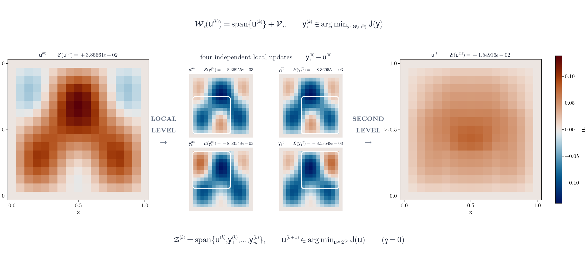

EnergyMinimizingDD.jl
EnergyMinimizingDD.jl implements energy-minimizing domain-decomposition methods for finite-element source problems, generalized eigenproblems, semilinear equations, and Gross–Pitaevskii ground states.

EnergyMinimizingDD.jl is experimental research software. The public API may evolve before a stable release.
Installation
Install the development version from GitHub:
import Pkg
Pkg.add(url="https://github.com/lamBOOO/EnergyMinimizingDD.jl.git")Julia 1.10 or newer is required.
First solve
This example discretizes $-\Delta u=1$ on the unit square with homogeneous Dirichlet boundary conditions and minimizes the resulting quadratic energy using four overlapping Cartesian subdomains.
using EnergyMinimizingDD, LinearAlgebra
const FEM = EnergyMinimizingDD.FEMDiscretizations
const E = EnergyMinimizingDD.Energies
const S = EnergyMinimizingDD.Solvers
A, _, b, subdomains, _ = FEM.FEM_Schroedinger(
16, 4; P=x -> 0.0, f=x -> 1.0, overlap=2,
partitioning=:cartesian,
)
energy = E.QuadraticEnergy(A, b)
u, _, _, _, residuals = S.var_dd(
energy, subdomains; maxiter=50, tol=1e-8, verbose=false,
)
@show length(residuals) norm(A * u - b)In the notation of the theory manuscript, the corresponding discrete energy and stationarity residual are
\[\mathcal E(\mathsf u) =\frac12\mathsf u^\top\mathsf A\mathsf u-\mathsf b^\top\mathsf u, \qquad \mathsf r(\mathsf u):=\nabla\mathcal E(\mathsf u) =\mathsf A\mathsf u-\mathsf b.\]
See the repository README for the measured convergence history, the local and second-level minimization problems, and links to the benchmark studies.
Where to go next
- The API reference documents the local solvers, second-level combination routines, and iteration drivers.
examples/heat_equation_dd.jldemonstrates warm-started quadratic solves for a gradient flow.- The paper studies cover Poisson, eigenvalue, semilinear, heat, and Gross–Pitaevskii problems.